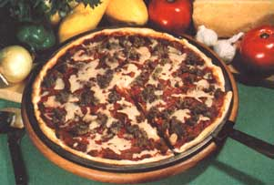

A couple of years ago-when she started to buy a little teenie can of prepared pizza sauce in a supermarket-Barryton, Michigan's Carolyn Allen was floored by the tiny container's giant price.
"So I decided to make my own pizza sauce from my own homegrown produce during the following canning season," Carolyn now says. "It took a bit of experimenting to come up with just the right amount of all the ingredients . . . but I finally hit upon a blend that the folks around here seem to relish. The secret is the herbs: Don't be afraid to put more of 'em in than you think you shouldl That's what gives my sauce its hearty flavor and character."
Mix 12 to 14 pounds of cored and skinned fresh or home-canned tomatoes together with one pound (two cups) of chopped celery, three cups of chopped onions, three chopped green peppers, one or two finely chopped cloves of garlic, and either one-quarter cup of Italian seasoning or two tablespoons of oregano, one tablespoon of basil, and one tablespoon of thyme. (If you like, you can also add one to one and a half cups of finely diced summer squash. It won't change the taste but the squash will extend the sauce and make it thicken more quickly.)
Simmer all these ingredients together over a low heat for two to three hours, or until the mixture has cooked into a thick, savory richness. Then cool the sauce, pour it into one-pint freezing cartons (it should fill about eight of them), and freeze .
"I also prepackage cheese and sausage for my homemade pizzas," Carolyn goes on. "We buy the cheese in six-pound blocks from a food co-op and I shred it with my salad maker and stash it away in the freezer in one-pint cartons. When we thaw it later and use it, it's every bit as good as (but far less expensive than) the costly little packets of shredded cheese sold in the supermarkets.
"The same goes for the sausage. I buy it freshly ground and seasoned-but with absolutely no unwanted preservatives added-from a local butcher shop, and freeze it (three-quarters of a pound per container) in pint cartons."
"I like to prepare dough ahead for pizza crusts too," Carolyn says. "Whenever I bake loaves of whole wheat, anadama, herb, or other breads . . . I just mix up a little extra, package the dough in onepound lots, and freeze it right alongside my other ingredients. Then-when pizza day rolls around-all I have to do is go to the freezer and select one container of crust, one sauce, one sausage, and one cheese . . . thaw everything . . . roll out the dough and spread on the sauce, sausage, and cheese . . . bake my creation at 450°F for about 15 minutes or until the cheese is slightly browned . . . and 'serve 'er up' to a hungry family of four."
Well, that whole idea sounded so good when Carolyn Allen described it, that MOTHER's recipe testers decided they'd give it a try too. So they mixed, simmered, and froze a batch of their own pizza sauce from summer vegetables . . . grated some cheese . . . bought some fresh sausage from a little country butcher shop . . . and worked up and froze a batch of pizza dough.
Actually, MOTHER's dough was essentially the Tassajara Yeasted Bread-a big favorite around here-featured in The Tassajara Bread Book (a 1970 Shambhala book by Edward Espe Brown, available in paperback for $3.95 from any good bookstore or $3.95 plus 95 cents shipping and handling from Mother's Bookshelf, P.O. Box 70, Hender sonville, North Carolina 28739).
Dissolve two packages of dry yeast in three cups of lukewarm water (sprinkle some on your wrist to test its temperature), and then stir in one-quarter cup of honey. Next add four cups of whole wheat flour-or three cups of whole wheat and one cup of unbleached flour-and stir until you have a thick batter. Beat the mixture about 100 strokes with a spoon and set it aside to rise for an hour.
At the end of the hour gently stir in one and one-quarter tablespoons of salt and one-third cup of vegetable oil. Then add three to four more cups of whole wheat flour (keep adding until the dough sticks together in a sponge that pulls away from the sides of the bowl), and knead the dough on a floured surface. Use as much additional flour-up to one or one and a half cups-as necessary to keep the sponge from sticking while you knead it for 10 to 15 minutes (until the dough becomes smooth).
Place the sponge in a large oiled bowl, cover it with a damp cloth, and let it rise in a warm place for about 50 minutes. Then-using your fist-gently punch it down to slightly larger than it was an hour before, cover the sponge again, and let it rise another 40 minutes.
Finally, shape the dough into two loaves, put one into a greased bread pan, cover, let it rise for another 20 minutes (until the center of the loaf has risen up even with the top of the pan), and bake at 350°F for about an hour . . . or until the loaf is golden-brown all over and sounds hollow when you tap it on the bottom. Turn the bread out of its pan and let it cool awhile on a wire rack.
In the meantime, divide the other loaf in half . . . and freeze each piece in a pint container (for later use as the crusts of two pizzas).
Then when-as Carolyn Allen says-"pizza day rolls around" at your house, you can (as Ms. Allen and MOTHER now do) pull a container of dough and one each of sauce, grated cheese, and sausage out of your freezer.
Butter or oil your hands and the pizza pan (or cookie sheet) you intend to use. Then place the lump of thawed dough in the container's center and gently flatten and spread it with your fingers until it covers the pan as smoothly as possible. (Don't leave any holes or tears in the dough, or the sauce will cook through and burn.) And-if you prefer a crispy crust-now's the time to bake the bare dough a quick 5 to 10 minutes at 450°F before you load it with the sauce, sausage, and cheese.
Next spread a thawed container of your homemade pizza sauce smoothly and evenly over-but not quite all the way out to the edges of-the dough (either prebaked or unbaked). Then spread on the thawed sausage-fry it in a skillet first, drain it, and then sprinkle it on if you prefer less grease in your pizza-and grated cheese (some folks like mozzarella, others swear by Colby, and still others insist on Parmesan or a different favorite yet . . . let your own taste buds decide).
Last but not least, slip your delectable creation into a 450°F oven and bake it for about 15 minutes, or until the crust is a beautiful golden-brown and the cheese is melted and bubbly.
This recipe feeds four. Or, maybe, on an autumn evening when there's a threat of winter in the air. . . it may only feed two or three. In other words, fix plenty? Folks just never seem to know when to stop eating this wholesome, all-natural, do-it-yourself pizzal
|
 |
|
|